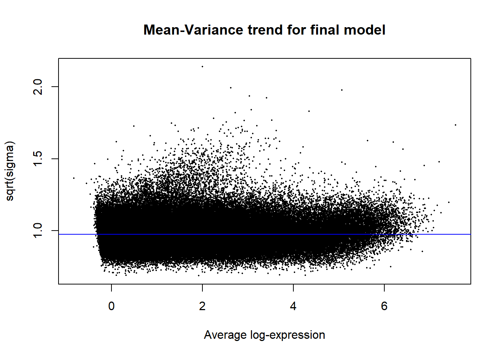

DAR_analysis
Renee Matthews
2025-05-06
Last updated: 2025-06-13
Checks: 7 0
Knit directory: ATAC_learning/
This reproducible R Markdown analysis was created with workflowr (version 1.7.1). The Checks tab describes the reproducibility checks that were applied when the results were created. The Past versions tab lists the development history.
Great! Since the R Markdown file has been committed to the Git repository, you know the exact version of the code that produced these results.
Great job! The global environment was empty. Objects defined in the global environment can affect the analysis in your R Markdown file in unknown ways. For reproduciblity it’s best to always run the code in an empty environment.
The command set.seed(20231016) was run prior to running
the code in the R Markdown file. Setting a seed ensures that any results
that rely on randomness, e.g. subsampling or permutations, are
reproducible.
Great job! Recording the operating system, R version, and package versions is critical for reproducibility.
Nice! There were no cached chunks for this analysis, so you can be confident that you successfully produced the results during this run.
Great job! Using relative paths to the files within your workflowr project makes it easier to run your code on other machines.
Great! You are using Git for version control. Tracking code development and connecting the code version to the results is critical for reproducibility.
The results in this page were generated with repository version 352072c. See the Past versions tab to see a history of the changes made to the R Markdown and HTML files.
Note that you need to be careful to ensure that all relevant files for
the analysis have been committed to Git prior to generating the results
(you can use wflow_publish or
wflow_git_commit). workflowr only checks the R Markdown
file, but you know if there are other scripts or data files that it
depends on. Below is the status of the Git repository when the results
were generated:
Ignored files:
Ignored: .RData
Ignored: .Rhistory
Ignored: .Rproj.user/
Ignored: analysis/H3K27ac_integration_noM.Rmd
Ignored: analysis/figure/
Ignored: data/ACresp_SNP_table.csv
Ignored: data/ARR_SNP_table.csv
Ignored: data/All_merged_peaks.tsv
Ignored: data/CAD_gwas_dataframe.RDS
Ignored: data/CTX_SNP_table.csv
Ignored: data/Collapsed_expressed_NG_peak_table.csv
Ignored: data/DEG_toplist_sep_n45.RDS
Ignored: data/FRiP_first_run.txt
Ignored: data/Final_four_data/
Ignored: data/Frip_1_reads.csv
Ignored: data/Frip_2_reads.csv
Ignored: data/Frip_3_reads.csv
Ignored: data/Frip_4_reads.csv
Ignored: data/Frip_5_reads.csv
Ignored: data/Frip_6_reads.csv
Ignored: data/GO_KEGG_analysis/
Ignored: data/HF_SNP_table.csv
Ignored: data/Ind1_75DA24h_dedup_peaks.csv
Ignored: data/Ind1_TSS_peaks.RDS
Ignored: data/Ind1_firstfragment_files.txt
Ignored: data/Ind1_fragment_files.txt
Ignored: data/Ind1_peaks_list.RDS
Ignored: data/Ind1_summary.txt
Ignored: data/Ind2_TSS_peaks.RDS
Ignored: data/Ind2_fragment_files.txt
Ignored: data/Ind2_peaks_list.RDS
Ignored: data/Ind2_summary.txt
Ignored: data/Ind3_TSS_peaks.RDS
Ignored: data/Ind3_fragment_files.txt
Ignored: data/Ind3_peaks_list.RDS
Ignored: data/Ind3_summary.txt
Ignored: data/Ind4_79B24h_dedup_peaks.csv
Ignored: data/Ind4_TSS_peaks.RDS
Ignored: data/Ind4_V24h_fraglength.txt
Ignored: data/Ind4_fragment_files.txt
Ignored: data/Ind4_fragment_filesN.txt
Ignored: data/Ind4_peaks_list.RDS
Ignored: data/Ind4_summary.txt
Ignored: data/Ind5_TSS_peaks.RDS
Ignored: data/Ind5_fragment_files.txt
Ignored: data/Ind5_fragment_filesN.txt
Ignored: data/Ind5_peaks_list.RDS
Ignored: data/Ind5_summary.txt
Ignored: data/Ind6_TSS_peaks.RDS
Ignored: data/Ind6_fragment_files.txt
Ignored: data/Ind6_peaks_list.RDS
Ignored: data/Ind6_summary.txt
Ignored: data/Knowles_4.RDS
Ignored: data/Knowles_5.RDS
Ignored: data/Knowles_6.RDS
Ignored: data/LiSiLTDNRe_TE_df.RDS
Ignored: data/MI_gwas.RDS
Ignored: data/SNP_GWAS_PEAK_MRC_id
Ignored: data/SNP_GWAS_PEAK_MRC_id.csv
Ignored: data/SNP_gene_cat_list.tsv
Ignored: data/SNP_supp_schneider.RDS
Ignored: data/TE_info/
Ignored: data/TFmapnames.RDS
Ignored: data/all_TSSE_scores.RDS
Ignored: data/all_four_filtered_counts.txt
Ignored: data/aln_run1_results.txt
Ignored: data/anno_ind1_DA24h.RDS
Ignored: data/anno_ind4_V24h.RDS
Ignored: data/annotated_gwas_SNPS.csv
Ignored: data/background_n45_he_peaks.RDS
Ignored: data/cardiac_muscle_FRIP.csv
Ignored: data/cardiomyocyte_FRIP.csv
Ignored: data/col_ng_peak.csv
Ignored: data/cormotif_full_4_run.RDS
Ignored: data/cormotif_full_4_run_he.RDS
Ignored: data/cormotif_full_6_run.RDS
Ignored: data/cormotif_full_6_run_he.RDS
Ignored: data/cormotif_probability_45_list.csv
Ignored: data/cormotif_probability_45_list_he.csv
Ignored: data/cormotif_probability_all_6_list.csv
Ignored: data/cormotif_probability_all_6_list_he.csv
Ignored: data/datasave.RDS
Ignored: data/embryo_heart_FRIP.csv
Ignored: data/enhancer_list_ENCFF126UHK.bed
Ignored: data/enhancerdata/
Ignored: data/filt_Peaks_efit2.RDS
Ignored: data/filt_Peaks_efit2_bl.RDS
Ignored: data/filt_Peaks_efit2_n45.RDS
Ignored: data/first_Peaksummarycounts.csv
Ignored: data/first_run_frag_counts.txt
Ignored: data/full_bedfiles/
Ignored: data/gene_ref.csv
Ignored: data/gwas_1_dataframe.RDS
Ignored: data/gwas_2_dataframe.RDS
Ignored: data/gwas_3_dataframe.RDS
Ignored: data/gwas_4_dataframe.RDS
Ignored: data/gwas_5_dataframe.RDS
Ignored: data/high_conf_peak_counts.csv
Ignored: data/high_conf_peak_counts.txt
Ignored: data/high_conf_peaks_bl_counts.txt
Ignored: data/high_conf_peaks_counts.txt
Ignored: data/hits_files/
Ignored: data/hyper_files/
Ignored: data/hypo_files/
Ignored: data/ind1_DA24hpeaks.RDS
Ignored: data/ind1_TSSE.RDS
Ignored: data/ind2_TSSE.RDS
Ignored: data/ind3_TSSE.RDS
Ignored: data/ind4_TSSE.RDS
Ignored: data/ind4_V24hpeaks.RDS
Ignored: data/ind5_TSSE.RDS
Ignored: data/ind6_TSSE.RDS
Ignored: data/initial_complete_stats_run1.txt
Ignored: data/left_ventricle_FRIP.csv
Ignored: data/median_24_lfc.RDS
Ignored: data/median_3_lfc.RDS
Ignored: data/mergedPeads.gff
Ignored: data/mergedPeaks.gff
Ignored: data/motif_list_full
Ignored: data/motif_list_n45
Ignored: data/motif_list_n45.RDS
Ignored: data/multiqc_fastqc_run1.txt
Ignored: data/multiqc_fastqc_run2.txt
Ignored: data/multiqc_genestat_run1.txt
Ignored: data/multiqc_genestat_run2.txt
Ignored: data/my_hc_filt_counts.RDS
Ignored: data/my_hc_filt_counts_n45.RDS
Ignored: data/n45_bedfiles/
Ignored: data/n45_files
Ignored: data/other_papers/
Ignored: data/peakAnnoList_1.RDS
Ignored: data/peakAnnoList_2.RDS
Ignored: data/peakAnnoList_24_full.RDS
Ignored: data/peakAnnoList_24_n45.RDS
Ignored: data/peakAnnoList_3.RDS
Ignored: data/peakAnnoList_3_full.RDS
Ignored: data/peakAnnoList_3_n45.RDS
Ignored: data/peakAnnoList_4.RDS
Ignored: data/peakAnnoList_5.RDS
Ignored: data/peakAnnoList_6.RDS
Ignored: data/peakAnnoList_Eight.RDS
Ignored: data/peakAnnoList_full_motif.RDS
Ignored: data/peakAnnoList_n45_motif.RDS
Ignored: data/siglist_full.RDS
Ignored: data/siglist_n45.RDS
Ignored: data/summarized_peaks_dataframe.txt
Ignored: data/summary_peakIDandReHeat.csv
Ignored: data/test.list.RDS
Ignored: data/testnames.txt
Ignored: data/toplist_6.RDS
Ignored: data/toplist_full.RDS
Ignored: data/toplist_full_DAR_6.RDS
Ignored: data/toplist_n45.RDS
Ignored: data/trimmed_seq_length.csv
Ignored: data/unclassified_full_set_peaks.RDS
Ignored: data/unclassified_n45_set_peaks.RDS
Ignored: data/xstreme/
Untracked files:
Untracked: RNA_seq_integration.Rmd
Untracked: Rplot.pdf
Untracked: Sig_meta
Untracked: analysis/.gitignore
Untracked: analysis/AC_shared_analysis.Rmd
Untracked: analysis/Cormotif_analysis_testing diff.Rmd
Untracked: analysis/Diagnosis-tmm.Rmd
Untracked: analysis/Expressed_RNA_associations.Rmd
Untracked: analysis/LFC_corr.Rmd
Untracked: analysis/SNP_TAD_peaks.Rmd
Untracked: analysis/SVA.Rmd
Untracked: analysis/Tan2020.Rmd
Untracked: analysis/Top2B_analysis.Rmd
Untracked: analysis/making_master_peaks_list.Rmd
Untracked: analysis/my_hc_filt_counts.csv
Untracked: code/Concatenations_for_export.R
Untracked: code/IGV_snapshot_code.R
Untracked: code/LongDARlist.R
Untracked: code/just_for_Fun.R
Untracked: my_plot.pdf
Untracked: my_plot.png
Untracked: output/cormotif_probability_45_list.csv
Untracked: output/cormotif_probability_all_6_list.csv
Untracked: setup.RData
Unstaged changes:
Modified: ATAC_learning.Rproj
Modified: analysis/AF_HF_SNPs.Rmd
Modified: analysis/Cardiotox_SNPs.Rmd
Modified: analysis/Cormotif_analysis.Rmd
Modified: analysis/H3K27ac_initial_QC.Rmd
Modified: analysis/Jaspar_motif.Rmd
Modified: analysis/Jaspar_motif_ff.Rmd
Modified: analysis/TE_analysis_norm.Rmd
Modified: analysis/final_four_analysis.Rmd
Note that any generated files, e.g. HTML, png, CSS, etc., are not included in this status report because it is ok for generated content to have uncommitted changes.
These are the previous versions of the repository in which changes were
made to the R Markdown (analysis/DEG_analysis.Rmd) and HTML
(docs/DEG_analysis.html) files. If you’ve configured a
remote Git repository (see ?wflow_git_remote), click on the
hyperlinks in the table below to view the files as they were in that
past version.
| File | Version | Author | Date | Message |
|---|---|---|---|---|
| Rmd | 352072c | reneeisnowhere | 2025-06-13 | updates to y and x axis |
| html | 04d6841 | reneeisnowhere | 2025-06-12 | Build site. |
| Rmd | 601b63f | reneeisnowhere | 2025-06-12 | updates |
| html | eeaa3e6 | reneeisnowhere | 2025-06-09 | Build site. |
| Rmd | 7a30fff | reneeisnowhere | 2025-06-09 | updateing enrichment test |
| html | f0c5b69 | reneeisnowhere | 2025-06-05 | Build site. |
| Rmd | 23a3ce1 | reneeisnowhere | 2025-06-05 | adding in DAR analysis |
| html | 54e129a | reneeisnowhere | 2025-05-15 | Build site. |
| html | cf05574 | reneeisnowhere | 2025-05-14 | Build site. |
| Rmd | 19d6784 | reneeisnowhere | 2025-05-14 | updates to volcano plots |
| html | 4163890 | reneeisnowhere | 2025-05-12 | Build site. |
| Rmd | 9716d1a | reneeisnowhere | 2025-05-12 | updated with top3 |
| html | cb0030e | reneeisnowhere | 2025-05-08 | Build site. |
| Rmd | df7eb88 | reneeisnowhere | 2025-05-08 | spelling correction |
| html | 5e6e462 | reneeisnowhere | 2025-05-07 | Build site. |
| Rmd | d969893 | reneeisnowhere | 2025-05-07 | updating new pages |
| html | fee3875 | reneeisnowhere | 2025-05-06 | Build site. |
| Rmd | 01178cf | reneeisnowhere | 2025-05-06 | adding in segment |
library(tidyverse)
library(kableExtra)
library(broom)
library(RColorBrewer)
library(ChIPseeker)
library("TxDb.Hsapiens.UCSC.hg38.knownGene")
library("org.Hs.eg.db")
library(rtracklayer)
library(edgeR)
library(ggfortify)
library(limma)
library(readr)
library(BiocGenerics)
library(gridExtra)
library(VennDiagram)
library(scales)
library(BiocParallel)
library(ggpubr)
library(devtools)
library(eulerr)
library(ggsignif)
library(plyranges)
library(ggrepel)
library(ComplexHeatmap)
library(cowplot)
library(smplot2)
library(data.table)
library(ggVennDiagram)Differential analysis
Loading counts matrix and making filtered matrix
raw_counts <- read_delim("data/Final_four_data/re_analysis/Raw_unfiltered_counts.tsv",delim="\t") %>%
column_to_rownames("Peakid") %>%
as.matrix()
lcpm <- cpm(raw_counts, log= TRUE)
### for determining the basic cutoffs
filt_raw_counts <- raw_counts[rowMeans(lcpm)> 0,]
filt_raw_counts_noY <- filt_raw_counts[!grepl("chrY",rownames(filt_raw_counts)),]
dim(filt_raw_counts_noY)[1] 155557 48Number of filtered regions without the y chromosome = 155557 regions
making the metadata form
annotation_mat <- data.frame(timeset=colnames(filt_raw_counts_noY)) %>%
mutate(sample = timeset) %>%
separate(timeset, into = c("indv","trt","time"), sep= "_") %>%
mutate(time = factor(time, levels = c("3h", "24h"))) %>%
mutate(trt = factor(trt, levels = c("DOX","EPI", "DNR", "MTX", "TRZ", "VEH"))) %>%
mutate(indv=factor(indv, levels = c("A","B","C","D"))) %>%
mutate(trt_time=paste0(trt,"_",time))prepare DGE object
group <- c( rep(c(1,2,3,4,5,6,7,8,9,10,11,12),4))
group <- factor(group, levels =c("1","2","3","4","5","6","7","8","9","10","11","12"))
dge <- DGEList.data.frame(counts = filt_raw_counts_noY, group = group, genes = row.names(filt_raw_counts_noY))
dge <- calcNormFactors(dge)
dge$samples group lib.size norm.factors
D_DNR_24h 1 16022907 1.0239692
D_DNR_3h 2 12283494 0.9612342
D_DOX_24h 3 17860884 1.0367665
D_DOX_3h 4 13506791 1.0325656
D_EPI_24h 5 18628141 1.0327372
D_EPI_3h 6 11218019 1.0171289
D_MTX_24h 7 15070579 1.1107812
D_MTX_3h 8 8224116 1.0938773
D_TRZ_24h 9 13765197 0.9916489
D_TRZ_3h 10 9838944 1.0289011
D_VEH_24h 11 18137669 0.9855606
D_VEH_3h 12 5215243 1.1193711
A_DNR_24h 1 12446867 0.9913953
A_DNR_3h 2 13336679 0.9109168
A_DOX_24h 3 11024760 0.8994761
A_DOX_3h 4 11312301 0.9817107
A_EPI_24h 5 10054890 0.8306893
A_EPI_3h 6 13289458 0.8846067
A_MTX_24h 7 12051332 1.0488547
A_MTX_3h 8 19529308 0.9756453
A_TRZ_24h 9 11144980 0.8850322
A_TRZ_3h 10 10815793 0.9696953
A_VEH_24h 11 10644539 0.9044966
A_VEH_3h 12 10146179 1.0015305
B_DNR_24h 1 8695642 1.0170461
B_DNR_3h 2 11572135 0.8666718
B_DOX_24h 3 7780737 1.0039941
B_DOX_3h 4 6315637 0.8935147
B_EPI_24h 5 7912993 1.0275056
B_EPI_3h 6 7196001 0.9035920
B_MTX_24h 7 7434261 1.0947453
B_MTX_3h 8 10544429 0.8769442
B_TRZ_24h 9 6552039 0.9772581
B_TRZ_3h 10 6390372 0.9027404
B_VEH_24h 11 3521378 1.0063550
B_VEH_3h 12 4936492 1.0027569
C_DNR_24h 1 11796366 1.0773328
C_DNR_3h 2 6968392 1.0576684
C_DOX_24h 3 8352016 1.1219236
C_DOX_3h 4 5992702 1.0623451
C_EPI_24h 5 7970178 1.1143342
C_EPI_3h 6 5933236 1.0854547
C_MTX_24h 7 5584157 1.1803465
C_MTX_3h 8 9157251 1.0227009
C_TRZ_24h 9 5662913 1.0288892
C_TRZ_3h 10 4552166 1.0697477
C_VEH_24h 11 7597538 1.0237355
C_VEH_3h 12 6681133 1.0107246Making model matrix
group_1 <- c(rep(c("DNR_24","DNR_3","DOX_24","DOX_3","EPI_24","EPI_3","MTX_24","MTX_3","TRZ_24","TRZ_3","VEH_24", "VEH_3"),4))
mm <- model.matrix(~0 +group_1)
colnames(mm) <- c("DNR_24", "DNR_3", "DOX_24","DOX_3","EPI_24", "EPI_3","MTX_24", "MTX_3", "TRZ_24","TRZ_3","VEH_24", "VEH_3")
mm DNR_24 DNR_3 DOX_24 DOX_3 EPI_24 EPI_3 MTX_24 MTX_3 TRZ_24 TRZ_3 VEH_24
1 1 0 0 0 0 0 0 0 0 0 0
2 0 1 0 0 0 0 0 0 0 0 0
3 0 0 1 0 0 0 0 0 0 0 0
4 0 0 0 1 0 0 0 0 0 0 0
5 0 0 0 0 1 0 0 0 0 0 0
6 0 0 0 0 0 1 0 0 0 0 0
7 0 0 0 0 0 0 1 0 0 0 0
8 0 0 0 0 0 0 0 1 0 0 0
9 0 0 0 0 0 0 0 0 1 0 0
10 0 0 0 0 0 0 0 0 0 1 0
11 0 0 0 0 0 0 0 0 0 0 1
12 0 0 0 0 0 0 0 0 0 0 0
13 1 0 0 0 0 0 0 0 0 0 0
14 0 1 0 0 0 0 0 0 0 0 0
15 0 0 1 0 0 0 0 0 0 0 0
16 0 0 0 1 0 0 0 0 0 0 0
17 0 0 0 0 1 0 0 0 0 0 0
18 0 0 0 0 0 1 0 0 0 0 0
19 0 0 0 0 0 0 1 0 0 0 0
20 0 0 0 0 0 0 0 1 0 0 0
21 0 0 0 0 0 0 0 0 1 0 0
22 0 0 0 0 0 0 0 0 0 1 0
23 0 0 0 0 0 0 0 0 0 0 1
24 0 0 0 0 0 0 0 0 0 0 0
25 1 0 0 0 0 0 0 0 0 0 0
26 0 1 0 0 0 0 0 0 0 0 0
27 0 0 1 0 0 0 0 0 0 0 0
28 0 0 0 1 0 0 0 0 0 0 0
29 0 0 0 0 1 0 0 0 0 0 0
30 0 0 0 0 0 1 0 0 0 0 0
31 0 0 0 0 0 0 1 0 0 0 0
32 0 0 0 0 0 0 0 1 0 0 0
33 0 0 0 0 0 0 0 0 1 0 0
34 0 0 0 0 0 0 0 0 0 1 0
35 0 0 0 0 0 0 0 0 0 0 1
36 0 0 0 0 0 0 0 0 0 0 0
37 1 0 0 0 0 0 0 0 0 0 0
38 0 1 0 0 0 0 0 0 0 0 0
39 0 0 1 0 0 0 0 0 0 0 0
40 0 0 0 1 0 0 0 0 0 0 0
41 0 0 0 0 1 0 0 0 0 0 0
42 0 0 0 0 0 1 0 0 0 0 0
43 0 0 0 0 0 0 1 0 0 0 0
44 0 0 0 0 0 0 0 1 0 0 0
45 0 0 0 0 0 0 0 0 1 0 0
46 0 0 0 0 0 0 0 0 0 1 0
47 0 0 0 0 0 0 0 0 0 0 1
48 0 0 0 0 0 0 0 0 0 0 0
VEH_3
1 0
2 0
3 0
4 0
5 0
6 0
7 0
8 0
9 0
10 0
11 0
12 1
13 0
14 0
15 0
16 0
17 0
18 0
19 0
20 0
21 0
22 0
23 0
24 1
25 0
26 0
27 0
28 0
29 0
30 0
31 0
32 0
33 0
34 0
35 0
36 1
37 0
38 0
39 0
40 0
41 0
42 0
43 0
44 0
45 0
46 0
47 0
48 1
attr(,"assign")
[1] 1 1 1 1 1 1 1 1 1 1 1 1
attr(,"contrasts")
attr(,"contrasts")$group_1
[1] "contr.treatment"In this pipeline, I first run voom transformation, then estimate the intra-individual correlation. Next I do voom again with correlation info. I fit the linear model, define contrasts, then apply the contrasts and perform eBayes to get statistics.
y <- voom(dge, mm,plot =FALSE)
corfit <- duplicateCorrelation(y, mm, block = annotation_mat$indv)
v <- voom(dge, mm, block = annotation_mat$indv, correlation = corfit$consensus)
fit <- lmFit(v, mm, block = annotation_mat$indv, correlation = corfit$consensus)
cm <- makeContrasts(
DNR_3.VEH_3 = DNR_3-VEH_3,
DOX_3.VEH_3 = DOX_3-VEH_3,
EPI_3.VEH_3 = EPI_3-VEH_3,
MTX_3.VEH_3 = MTX_3-VEH_3,
TRZ_3.VEH_3 = TRZ_3-VEH_3,
DNR_24.VEH_24 =DNR_24-VEH_24,
DOX_24.VEH_24= DOX_24-VEH_24,
EPI_24.VEH_24= EPI_24-VEH_24,
MTX_24.VEH_24= MTX_24-VEH_24,
TRZ_24.VEH_24= TRZ_24-VEH_24,
levels = mm)
fit2<- contrasts.fit(fit, contrasts=cm)
efit2 <- eBayes(fit2)
results = decideTests(efit2)
summary(results) DNR_3.VEH_3 DOX_3.VEH_3 EPI_3.VEH_3 MTX_3.VEH_3 TRZ_3.VEH_3
Down 10868 2244 7162 444 1
NotSig 132819 152084 141323 154753 155556
Up 11870 1229 7072 360 0
DNR_24.VEH_24 DOX_24.VEH_24 EPI_24.VEH_24 MTX_24.VEH_24 TRZ_24.VEH_24
Down 39400 32313 32932 14182 0
NotSig 75562 90737 89056 131307 155557
Up 40595 32507 33569 10068 0plotSA(efit2, main="Mean-Variance trend for final model")
| Version | Author | Date |
|---|---|---|
| fee3875 | reneeisnowhere | 2025-05-06 |
V.DNR_3.top= topTable(efit2, coef=1, adjust.method="BH", number=Inf, sort.by="p")
V.DOX_3.top= topTable(efit2, coef=2, adjust.method="BH", number=Inf, sort.by="p")
V.EPI_3.top= topTable(efit2, coef=3, adjust.method="BH", number=Inf, sort.by="p")
V.MTX_3.top= topTable(efit2, coef=4, adjust.method="BH", number=Inf, sort.by="p")
V.TRZ_3.top= topTable(efit2, coef=5, adjust.method="BH", number=Inf, sort.by="p")
V.DNR_24.top= topTable(efit2, coef=6, adjust.method="BH", number=Inf, sort.by="p")
V.DOX_24.top= topTable(efit2, coef=7, adjust.method="BH", number=Inf, sort.by="p")
V.EPI_24.top= topTable(efit2, coef=8, adjust.method="BH", number=Inf, sort.by="p")
V.MTX_24.top= topTable(efit2, coef=9, adjust.method="BH", number=Inf, sort.by="p")
V.TRZ_24.top= topTable(efit2, coef=10, adjust.method="BH", number=Inf, sort.by="p")
# plot_filenames <- c("V.DNR_3.top","V.DOX_3.top","V.EPI_3.top","V.MTX_3.top",
# "V.TRZ_.top","V.DNR_24.top","V.DOX_24.top","V.EPI_24.top",
# "V.MTX_24.top","V.TRZ_24.top")
# plot_files <- c( V.DNR_3.top,V.DOX_3.top,V.EPI_3.top,V.MTX_3.top,
# V.TRZ_3.top,V.DNR_24.top,V.DOX_24.top,V.EPI_24.top,
# V.MTX_24.top,V.TRZ_24.top)
save_list <- list("DNR_3"=V.DNR_3.top,"DOX_3"=V.DOX_3.top,"EPI_3"=V.EPI_3.top,"MTX_3"=V.MTX_3.top,"TRZ_3"=V.TRZ_3.top,"DNR_24"=V.DNR_24.top,"DOX_24"=V.DOX_24.top,"EPI_24"=V.EPI_24.top,"MTX_24"= V.MTX_24.top, "TRZ_24"=V.TRZ_24.top)
saveRDS(save_list,"data/Final_four_data/re_analysis/Toptable_results.RDS")Volcano Plots
volcanosig <- function(df, psig.lvl) {
df <- df %>%
mutate(threshold = ifelse(adj.P.Val > psig.lvl, "A", ifelse(adj.P.Val <= psig.lvl & logFC<=0,"B","C")))
# ifelse(adj.P.Val <= psig.lvl & logFC >= 0,"B", "C")))
##This is where I could add labels, but I have taken out
# df <- df %>% mutate(genelabels = "")
# df$genelabels[1:topg] <- df$rownames[1:topg]
ggplot(df, aes(x=logFC, y=-log10(P.Value))) +
ggrastr::geom_point_rast(aes(color=threshold))+
# geom_text_repel(aes(label = genelabels), segment.curvature = -1e-20,force = 1,size=2.5,
# arrow = arrow(length = unit(0.015, "npc")), max.overlaps = Inf) +
#geom_hline(yintercept = -log10(psig.lvl))+
xlab(expression("Log"[2]*" FC"))+
ylab(expression("-log"[10]*"P Value"))+
scale_color_manual(values = c("black", "red","blue"))+
theme_cowplot()+
ylim(0,25)+
xlim(-6,6)+
theme(legend.position = "none",
plot.title = element_text(size = rel(1.5), hjust = 0.5),
axis.title = element_text(size = rel(0.8)))
}
v1 <- volcanosig(V.DNR_3.top, 0.05)+ ggtitle("DNR 3 hour")
v2 <- volcanosig(V.DNR_24.top, 0.05)+ ggtitle("DNR 24 hour")+ylab("")
v3 <- volcanosig(V.DOX_3.top, 0.05)+ ggtitle("DOX 3 hour")
v4 <- volcanosig(V.DOX_24.top, 0.05)+ ggtitle("DOX 24 hour")+ylab("")
v5 <- volcanosig(V.EPI_3.top, 0.05)+ ggtitle("EPI 3 hour")
v6 <- volcanosig(V.EPI_24.top, 0.05)+ ggtitle("EPI 24 hour")+ylab("")
v7 <- volcanosig(V.MTX_3.top, 0.05)+ ggtitle("MTX 3 hour")
v8 <- volcanosig(V.MTX_24.top, 0.05)+ ggtitle("MTX 24 hour")+ylab("")
v9 <- volcanosig(V.TRZ_3.top, 0.05)+ ggtitle("TRZ 3 hour")
v10 <- volcanosig(V.TRZ_24.top, 0.05)+ ggtitle("TRZ 24 hour")+ylab("")
plot_grid(v1,v2, rel_widths =c(1,1))
plot_grid(v3,v4, rel_widths =c(1,1))
plot_grid(v5,v6, rel_widths =c(1,1))
plot_grid(v7,v8, rel_widths =c(1,1))
plot_grid(v9,v10, rel_widths =c(1,1))
Making the median dataframes by time. The files were saved as .csv for future use.
all_results <- bind_rows(save_list, .id = "group")
median_df <- all_results %>%
separate(group, into=c("trt","time"),sep = "_") %>%
pivot_wider(., id_cols=c(time,genes), names_from = trt, values_from = logFC) %>%
rowwise() %>%
mutate(median_ATAC_lfc= median(c_across(DNR:TRZ)))
median_3_lfc <- median_df %>%
dplyr::filter(time == "3") %>%
ungroup() %>%
dplyr::select(time, genes,median_ATAC_lfc) %>%
dplyr::rename("med_3h_lfc"=median_ATAC_lfc, "peak"=genes)
median_24_lfc <- median_df %>%
dplyr::filter(time == "24") %>%
ungroup() %>%
dplyr::select(time, genes,median_ATAC_lfc) %>%
dplyr::rename("med_24h_lfc"=median_ATAC_lfc,, "peak"=genes)
write_csv(median_3_lfc, "data/Final_four_data/re_analysis/median_3_lfc_norm.csv")
write_csv(median_24_lfc, "data/Final_four_data/re_analysis/median_24_lfc_norm.csv")Correlation of LFC between treatments
FCmatrix_ff <- subset(efit2$coefficients)
colnames(FCmatrix_ff) <-
c("DNR\n3h",
"DOX\n3h",
"EPI\n3h",
"MTX\n3h",
"TRZ\n3h",
"DNR\n24h",
"DOX\n24h",
"EPI\n24h",
"MTX\n24h",
"TRZ\n24h"
)
mat_col_ff <-
data.frame(
time = c(rep("3 hours", 5), rep("24 hours", 5)),
class = (c(
"AC", "AC", "AC", "nAC","nAC", "AC", "AC", "AC", "nAC","nAC"
)))
rownames(mat_col_ff) <- colnames(FCmatrix_ff)
mat_colors_ff <-
list(
time = c("pink", "chocolate4"),
class = c("yellow1", "lightgreen"))
names(mat_colors_ff$time) <- unique(mat_col_ff$time)
names(mat_colors_ff$class) <- unique(mat_col_ff$class)
# names(mat_colors_FC$TOP2i) <- unique(mat_col_FC$TOP2i)
corrFC_ff <- cor(FCmatrix_ff)
htanno_ff <- HeatmapAnnotation(df = mat_col_ff, col = mat_colors_ff)
Heatmap(corrFC_ff, top_annotation = htanno_ff)
| Version | Author | Date |
|---|---|---|
| 5e6e462 | reneeisnowhere | 2025-05-07 |
drug_pal <- c("#8B006D","#DF707E","#F1B72B", "#3386DD","#707031","#41B333")
# all_results <- bind_rows(save_list, .id = "group")
DNR_3_top3_ff <- row.names(V.DNR_3.top[1:3,])
log_filt_ff <-
filt_raw_counts_noY %>%
cpm(., log=TRUE)%>%
as.data.frame()
row.names(log_filt_ff) <- row.names(filt_raw_counts_noY)
log_filt_ff %>%
dplyr::filter(row.names(.) %in% DNR_3_top3_ff) %>%
mutate(Peak = row.names(.)) %>%
pivot_longer(cols = !Peak, names_to = "sample", values_to = "counts") %>%
separate("sample", into = c("indv","trt","time")) %>%
mutate(time=factor(time, levels = c("3h","24h"))) %>%
mutate(trt=factor(trt, levels= c("DOX","EPI","DNR","MTX","TRZ","VEH"))) %>%
ggplot(., aes (x = time, y=counts))+
geom_boxplot(aes(fill=trt))+
facet_wrap(Peak~.)+
ggtitle("top 3 DAR in 3 hour DNR")+
scale_fill_manual(values = drug_pal)+
theme_bw()
| Version | Author | Date |
|---|---|---|
| 4163890 | reneeisnowhere | 2025-05-12 |
DOX_3_top3_ff <- row.names(V.DOX_3.top[1:3,])
log_filt_ff %>%
dplyr::filter(row.names(.) %in% DOX_3_top3_ff) %>%
mutate(Peak = row.names(.)) %>%
pivot_longer(cols = !Peak, names_to = "sample", values_to = "counts") %>%
separate("sample", into = c("indv","trt","time")) %>%
mutate(time=factor(time, levels = c("3h","24h"))) %>%
mutate(trt=factor(trt, levels= c("DOX","EPI","DNR","MTX","TRZ","VEH"))) %>%
ggplot(., aes (x = time, y=counts))+
geom_boxplot(aes(fill=trt))+
facet_wrap(Peak~.)+
ggtitle("top 3 DAR in 3 hour DOX")+
scale_fill_manual(values = drug_pal)+
theme_bw()
| Version | Author | Date |
|---|---|---|
| 4163890 | reneeisnowhere | 2025-05-12 |
EPI_3_top3_ff <- row.names(V.EPI_3.top[1:3,])
log_filt_ff %>%
dplyr::filter(row.names(.) %in% EPI_3_top3_ff) %>%
mutate(Peak = row.names(.)) %>%
pivot_longer(cols = !Peak, names_to = "sample", values_to = "counts") %>%
separate("sample", into = c("indv","trt","time")) %>%
mutate(time=factor(time, levels = c("3h","24h"))) %>%
mutate(trt=factor(trt, levels= c("DOX","EPI","DNR","MTX","TRZ","VEH"))) %>%
ggplot(., aes (x = time, y=counts))+
geom_boxplot(aes(fill=trt))+
facet_wrap(Peak~.)+
ggtitle("top 3 DAR in 3 hour EPI")+
scale_fill_manual(values = drug_pal)+
theme_bw()
| Version | Author | Date |
|---|---|---|
| 4163890 | reneeisnowhere | 2025-05-12 |
MTX_3_top3_ff <- row.names(V.MTX_3.top[1:3,])
log_filt_ff %>%
dplyr::filter(row.names(.) %in% MTX_3_top3_ff) %>%
mutate(Peak = row.names(.)) %>%
pivot_longer(cols = !Peak, names_to = "sample", values_to = "counts") %>%
separate("sample", into = c("indv","trt","time")) %>%
mutate(time=factor(time, levels = c("3h","24h"))) %>%
mutate(trt=factor(trt, levels= c("DOX","EPI","DNR","MTX","TRZ","VEH"))) %>%
ggplot(., aes (x = time, y=counts))+
geom_boxplot(aes(fill=trt))+
facet_wrap(Peak~.)+
ggtitle("top 3 DAR in 3 hour MTX")+
scale_fill_manual(values = drug_pal)+
theme_bw()
| Version | Author | Date |
|---|---|---|
| 4163890 | reneeisnowhere | 2025-05-12 |
TRZ_3_top3_ff <- row.names(V.TRZ_3.top[1:3,])
log_filt_ff %>%
dplyr::filter(row.names(.) %in% TRZ_3_top3_ff) %>%
mutate(Peak = row.names(.)) %>%
pivot_longer(cols = !Peak, names_to = "sample", values_to = "counts") %>%
separate("sample", into = c("indv","trt","time")) %>%
mutate(time=factor(time, levels = c("3h","24h"))) %>%
mutate(trt=factor(trt, levels= c("DOX","EPI","DNR","MTX","TRZ","VEH"))) %>%
ggplot(., aes (x = time, y=counts))+
geom_boxplot(aes(fill=trt))+
facet_wrap(Peak~.)+
ggtitle("top 3 DAR in 3 hour TRZ")+
scale_fill_manual(values = drug_pal)+
theme_bw()
| Version | Author | Date |
|---|---|---|
| 4163890 | reneeisnowhere | 2025-05-12 |
DNR_24_top3_ff <- row.names(V.DNR_24.top[1:3,])
log_filt_ff %>%
dplyr::filter(row.names(.) %in% DNR_24_top3_ff) %>%
mutate(Peak = row.names(.)) %>%
pivot_longer(cols = !Peak, names_to = "sample", values_to = "counts") %>%
separate("sample", into = c("indv","trt","time")) %>%
mutate(time=factor(time, levels = c("3h","24h"))) %>%
mutate(trt=factor(trt, levels= c("DOX","EPI","DNR","MTX","TRZ","VEH"))) %>%
ggplot(., aes (x = time, y=counts))+
geom_boxplot(aes(fill=trt))+
facet_wrap(Peak~.)+
ggtitle("top 3 DAR in 24 hour DNR")+
scale_fill_manual(values = drug_pal)+
theme_bw()
| Version | Author | Date |
|---|---|---|
| 4163890 | reneeisnowhere | 2025-05-12 |
DOX_24_top3_ff <- row.names(V.DOX_24.top[1:3,])
log_filt_ff %>%
dplyr::filter(row.names(.) %in% DOX_24_top3_ff) %>%
mutate(Peak = row.names(.)) %>%
pivot_longer(cols = !Peak, names_to = "sample", values_to = "counts") %>%
separate("sample", into = c("indv","trt","time")) %>%
mutate(time=factor(time, levels = c("3h","24h"))) %>%
mutate(trt=factor(trt, levels= c("DOX","EPI","DNR","MTX","TRZ","VEH"))) %>%
ggplot(., aes (x = time, y=counts))+
geom_boxplot(aes(fill=trt))+
facet_wrap(Peak~.)+
ggtitle("top 3 DAR in 24 hour DOX")+
scale_fill_manual(values = drug_pal)+
theme_bw()
| Version | Author | Date |
|---|---|---|
| 4163890 | reneeisnowhere | 2025-05-12 |
EPI_24_top3_ff <- row.names(V.EPI_24.top[1:3,])
log_filt_ff %>%
dplyr::filter(row.names(.) %in% EPI_24_top3_ff) %>%
mutate(Peak = row.names(.)) %>%
pivot_longer(cols = !Peak, names_to = "sample", values_to = "counts") %>%
separate("sample", into = c("indv","trt","time")) %>%
mutate(time=factor(time, levels = c("3h","24h"))) %>%
mutate(trt=factor(trt, levels= c("DOX","EPI","DNR","MTX","TRZ","VEH"))) %>%
ggplot(., aes (x = time, y=counts))+
geom_boxplot(aes(fill=trt))+
facet_wrap(Peak~.)+
ggtitle("top 3 DAR in 24 hour EPI")+
scale_fill_manual(values = drug_pal)+
theme_bw()
| Version | Author | Date |
|---|---|---|
| 4163890 | reneeisnowhere | 2025-05-12 |
MTX_24_top3_ff <- row.names(V.MTX_24.top[1:3,])
log_filt_ff %>%
dplyr::filter(row.names(.) %in% MTX_24_top3_ff) %>%
mutate(Peak = row.names(.)) %>%
pivot_longer(cols = !Peak, names_to = "sample", values_to = "counts") %>%
separate("sample", into = c("indv","trt","time")) %>%
mutate(time=factor(time, levels = c("3h","24h"))) %>%
mutate(trt=factor(trt, levels= c("DOX","EPI","DNR","MTX","TRZ","VEH"))) %>%
ggplot(., aes (x = time, y=counts))+
geom_boxplot(aes(fill=trt))+
facet_wrap(Peak~.)+
ggtitle("top 3 DAR in 24 hour MTX")+
scale_fill_manual(values = drug_pal)+
theme_bw()
| Version | Author | Date |
|---|---|---|
| 4163890 | reneeisnowhere | 2025-05-12 |
TRZ_24_top3_ff <- row.names(V.TRZ_24.top[1:3,])
log_filt_ff %>%
dplyr::filter(row.names(.) %in% TRZ_24_top3_ff) %>%
mutate(Peak = row.names(.)) %>%
pivot_longer(cols = !Peak, names_to = "sample", values_to = "counts") %>%
separate("sample", into = c("indv","trt","time")) %>%
mutate(time=factor(time, levels = c("3h","24h"))) %>%
mutate(trt=factor(trt, levels= c("DOX","EPI","DNR","MTX","TRZ","VEH"))) %>%
ggplot(., aes (x = time, y=counts))+
geom_boxplot(aes(fill=trt))+
facet_wrap(Peak~.)+
ggtitle("top 3 DAR in 24 hour TRZ")+
scale_fill_manual(values = drug_pal)+
theme_bw()
| Version | Author | Date |
|---|---|---|
| 4163890 | reneeisnowhere | 2025-05-12 |
Examining around the adj. p value cutoff
DNR_closest <- V.DNR_3.top %>%
dplyr::filter(adj.P.Val<0.05) %>%
slice_tail(n=5)
log_filt_ff %>%
dplyr::filter(row.names(.) %in% DNR_closest$genes) %>%
mutate(Peak = row.names(.)) %>%
pivot_longer(cols = !Peak, names_to = "sample", values_to = "counts") %>%
separate("sample", into = c("indv","trt","time")) %>%
mutate(time=factor(time, levels = c("3h","24h"))) %>%
mutate(trt=factor(trt, levels= c("DOX","EPI","DNR","MTX","TRZ","VEH"))) %>%
ggplot(., aes (x = time, y=counts))+
geom_boxplot(aes(fill=trt))+
facet_wrap(Peak~.)+
ggtitle("Bottom DAR in 3 hour DNR")+
scale_fill_manual(values = drug_pal)+
theme_bw()
| Version | Author | Date |
|---|---|---|
| f0c5b69 | reneeisnowhere | 2025-06-05 |
DOX_closest <- V.DOX_3.top %>%
dplyr::filter(adj.P.Val<0.05) %>%
slice_tail(n=5)
log_filt_ff %>%
dplyr::filter(row.names(.) %in% DOX_closest$genes) %>%
mutate(Peak = row.names(.)) %>%
pivot_longer(cols = !Peak, names_to = "sample", values_to = "counts") %>%
separate("sample", into = c("indv","trt","time")) %>%
mutate(time=factor(time, levels = c("3h","24h"))) %>%
mutate(trt=factor(trt, levels= c("DOX","EPI","DNR","MTX","TRZ","VEH"))) %>%
ggplot(., aes (x = time, y=counts))+
geom_boxplot(aes(fill=trt))+
facet_wrap(Peak~.)+
ggtitle("bottom 5 DAR in 3 hour DOX")+
scale_fill_manual(values = drug_pal)+
theme_bw()
| Version | Author | Date |
|---|---|---|
| f0c5b69 | reneeisnowhere | 2025-06-05 |
EPI_closest <- V.EPI_3.top %>%
dplyr::filter(adj.P.Val<0.05) %>%
slice_tail(n=5)
log_filt_ff %>%
dplyr::filter(row.names(.) %in% EPI_closest$genes) %>%
mutate(Peak = row.names(.)) %>%
pivot_longer(cols = !Peak, names_to = "sample", values_to = "counts") %>%
separate("sample", into = c("indv","trt","time")) %>%
mutate(time=factor(time, levels = c("3h","24h"))) %>%
mutate(trt=factor(trt, levels= c("DOX","EPI","DNR","MTX","TRZ","VEH"))) %>%
ggplot(., aes (x = time, y=counts))+
geom_boxplot(aes(fill=trt))+
facet_wrap(Peak~.)+
ggtitle("bottom 5 DAR in 3 hour EPI")+
scale_fill_manual(values = drug_pal)+
theme_bw()
| Version | Author | Date |
|---|---|---|
| f0c5b69 | reneeisnowhere | 2025-06-05 |
MTX_closest <- V.MTX_3.top %>%
dplyr::filter(adj.P.Val<0.05) %>%
slice_tail(n=5)
log_filt_ff %>%
dplyr::filter(row.names(.) %in% MTX_closest$genes) %>%
mutate(Peak = row.names(.)) %>%
pivot_longer(cols = !Peak, names_to = "sample", values_to = "counts") %>%
separate("sample", into = c("indv","trt","time")) %>%
mutate(time=factor(time, levels = c("3h","24h"))) %>%
mutate(trt=factor(trt, levels= c("DOX","EPI","DNR","MTX","TRZ","VEH"))) %>%
ggplot(., aes (x = time, y=counts))+
geom_boxplot(aes(fill=trt))+
facet_wrap(Peak~.)+
ggtitle("bottom 5 DAR in 3 hour MTX")+
scale_fill_manual(values = drug_pal)+
theme_bw()
| Version | Author | Date |
|---|---|---|
| f0c5b69 | reneeisnowhere | 2025-06-05 |
TRZ_closest <- V.TRZ_3.top %>%
dplyr::filter(adj.P.Val<0.05) %>%
slice_tail(n=5)
log_filt_ff %>%
dplyr::filter(row.names(.) %in% TRZ_closest$genes) %>%
mutate(Peak = row.names(.)) %>%
pivot_longer(cols = !Peak, names_to = "sample", values_to = "counts") %>%
separate("sample", into = c("indv","trt","time")) %>%
mutate(time=factor(time, levels = c("3h","24h"))) %>%
mutate(trt=factor(trt, levels= c("DOX","EPI","DNR","MTX","TRZ","VEH"))) %>%
ggplot(., aes (x = time, y=counts))+
geom_boxplot(aes(fill=trt))+
facet_wrap(Peak~.)+
ggtitle("bottom 5 DAR in 3 hour TRZ")+
scale_fill_manual(values = drug_pal)+
theme_bw()
| Version | Author | Date |
|---|---|---|
| f0c5b69 | reneeisnowhere | 2025-06-05 |
DNR_closest <- V.DNR_24.top %>%
dplyr::filter(adj.P.Val<0.05) %>%
slice_tail(n=5)
log_filt_ff %>%
dplyr::filter(row.names(.) %in% DNR_closest$genes) %>%
mutate(Peak = row.names(.)) %>%
pivot_longer(cols = !Peak, names_to = "sample", values_to = "counts") %>%
separate("sample", into = c("indv","trt","time")) %>%
mutate(time=factor(time, levels = c("3h","24h"))) %>%
mutate(trt=factor(trt, levels= c("DOX","EPI","DNR","MTX","TRZ","VEH"))) %>%
ggplot(., aes (x = time, y=counts))+
geom_boxplot(aes(fill=trt))+
facet_wrap(Peak~.)+
ggtitle("Bottom DAR in 24 hour DNR")+
scale_fill_manual(values = drug_pal)+
theme_bw()
| Version | Author | Date |
|---|---|---|
| f0c5b69 | reneeisnowhere | 2025-06-05 |
DOX_closest <- V.DOX_24.top %>%
dplyr::filter(adj.P.Val<0.05) %>%
slice_tail(n=5)
log_filt_ff %>%
dplyr::filter(row.names(.) %in% DOX_closest$genes) %>%
mutate(Peak = row.names(.)) %>%
pivot_longer(cols = !Peak, names_to = "sample", values_to = "counts") %>%
separate("sample", into = c("indv","trt","time")) %>%
mutate(time=factor(time, levels = c("3h","24h"))) %>%
mutate(trt=factor(trt, levels= c("DOX","EPI","DNR","MTX","TRZ","VEH"))) %>%
ggplot(., aes (x = time, y=counts))+
geom_boxplot(aes(fill=trt))+
facet_wrap(Peak~.)+
ggtitle("bottom 5 DAR in 24 hour DOX")+
scale_fill_manual(values = drug_pal)+
theme_bw()
| Version | Author | Date |
|---|---|---|
| f0c5b69 | reneeisnowhere | 2025-06-05 |
EPI_closest <- V.EPI_24.top %>%
dplyr::filter(adj.P.Val<0.05) %>%
slice_tail(n=5)
log_filt_ff %>%
dplyr::filter(row.names(.) %in% EPI_closest$genes) %>%
mutate(Peak = row.names(.)) %>%
pivot_longer(cols = !Peak, names_to = "sample", values_to = "counts") %>%
separate("sample", into = c("indv","trt","time")) %>%
mutate(time=factor(time, levels = c("3h","24h"))) %>%
mutate(trt=factor(trt, levels= c("DOX","EPI","DNR","MTX","TRZ","VEH"))) %>%
ggplot(., aes (x = time, y=counts))+
geom_boxplot(aes(fill=trt))+
facet_wrap(Peak~.)+
ggtitle("bottom 5 DAR in 24 hour EPI")+
scale_fill_manual(values = drug_pal)+
theme_bw()
| Version | Author | Date |
|---|---|---|
| f0c5b69 | reneeisnowhere | 2025-06-05 |
MTX_closest <- V.MTX_24.top %>%
dplyr::filter(adj.P.Val<0.05) %>%
slice_tail(n=5)
log_filt_ff %>%
dplyr::filter(row.names(.) %in% MTX_closest$genes) %>%
mutate(Peak = row.names(.)) %>%
pivot_longer(cols = !Peak, names_to = "sample", values_to = "counts") %>%
separate("sample", into = c("indv","trt","time")) %>%
mutate(time=factor(time, levels = c("3h","24h"))) %>%
mutate(trt=factor(trt, levels= c("DOX","EPI","DNR","MTX","TRZ","VEH"))) %>%
ggplot(., aes (x = time, y=counts))+
geom_boxplot(aes(fill=trt))+
facet_wrap(Peak~.)+
ggtitle("bottom 5 DAR in 24 hour MTX")+
scale_fill_manual(values = drug_pal)+
theme_bw()
| Version | Author | Date |
|---|---|---|
| f0c5b69 | reneeisnowhere | 2025-06-05 |
# TRZ_closest <- V.TRZ_24.top %>%
# dplyr::filter(adj.P.Val<0.05) %>%
# slice_tail(n=5)
#
# log_filt_ff %>%
# dplyr::filter(row.names(.) %in% TRZ_closest$genes) %>%
# mutate(Peak = row.names(.)) %>%
# pivot_longer(cols = !Peak, names_to = "sample", values_to = "counts") %>%
# separate("sample", into = c("indv","trt","time")) %>%
# mutate(time=factor(time, levels = c("3h","24h"))) %>%
# mutate(trt=factor(trt, levels= c("DOX","EPI","DNR","MTX","TRZ","VEH"))) %>%
# ggplot(., aes (x = time, y=counts))+
# geom_boxplot(aes(fill=trt))+
# facet_wrap(Peak~.)+
# ggtitle("bottom 5 DAR in 24 hour TRZ")+
# scale_fill_manual(values = drug_pal)+
# theme_bw()toptable_results <- readRDS("data/Final_four_data/re_analysis/Toptable_results.RDS")
library(openxlsx)
output_dir <- "data/Final_four_data/re_analysis/ATAC_excel_outputs"
# Create directory if it doesn't exist
if (!dir.exists(output_dir)) {
dir.create(output_dir, recursive = TRUE)
}
# Export each data frame to a separate .xlsx file
for (name in names(toptable_results)) {
# Create a new workbook
wb <- createWorkbook()
# Add a worksheet (you can use the name as the sheet name too)
addWorksheet(wb, name)
# Write the data frame to the sheet
writeData(wb, sheet = name, toptable_results[[name]])
# Full file path using file.path()
output_file <- file.path(output_dir, paste0(name, ".xlsx"))
saveWorkbook(wb, file = output_file, overwrite = TRUE)
}toptable_results <- readRDS("data/Final_four_data/re_analysis/Toptable_results.RDS")
all_results <- toptable_results %>%
imap(~ .x %>% tibble::rownames_to_column(var = "rowname") %>%
mutate(source = .y)) %>%
bind_rows()
all_results_list <- toptable_results %>%
imap(~ .x %>% tibble::rownames_to_column(var = "rowname") %>%
mutate(source = .y))
sig_meta_and_loc <- all_results %>%
dplyr::filter(adj.P.Val<0.05) %>% ## filter by pvalue
##Create parsed dataframe from "rowname" column, "genes column will keep id"
separate(rowname, into = c("seqnames", "start", "end"), sep = "\\.", convert = TRUE)
###split into lists by DNR_3, etc..
sig_meta_and_loc_split <- split(sig_meta_and_loc, sig_meta_and_loc$source)
### Convert to Granges for downstream
sig_meta_and_loc_split_gr <- lapply(sig_meta_and_loc_split, function(sub_df) {
GRanges(
seqnames = sub_df$seqnames,
ranges = IRanges(start = sub_df$start, end = sub_df$end),
mcols = sub_df %>% select(-seqnames, -start, -end)
)
})
notsig_meta_and_loc <- all_results %>%
dplyr::filter(adj.P.Val>0.05) %>%
separate(rowname, into = c("seqnames","start","end"), sep = "\\.", convert=TRUE)
notsig_meta_and_loc_split <- split(notsig_meta_and_loc, notsig_meta_and_loc$source)
notsig_meta_and_loc_split_gr <- lapply(notsig_meta_and_loc_split, function(sub_df) {
GRanges(
seqnames = sub_df$seqnames,
ranges = IRanges(start = sub_df$start, end = sub_df$end),
mcols = sub_df %>% select(-seqnames, -start, -end)
)
})
all_DAR_regions <- all_results %>%
separate(rowname, into = c("seqnames", "start", "end"), sep = "\\.", convert = TRUE)
all_DAR_regions_list <- split(all_DAR_regions, all_DAR_regions$source)
all_DAR_regions_gr <- lapply(all_DAR_regions_list, function(sub_df) {
GRanges(
seqnames = sub_df$seqnames,
ranges = IRanges(start = sub_df$start, end = sub_df$end),
mcols = sub_df %>% dplyr::select(-seqnames, -start, -end)
)
})# Folder with input BED files
output_dir <- "data/Final_four_data/re_analysis/motif_beds_centered"
# Create output folder if needed
dir.create(output_dir, showWarnings = FALSE)
# Loop through each BED file
for (name in names(sig_meta_and_loc_split_gr)) {
gr <- sig_meta_and_loc_split_gr[[name]]
# Recenter each region to 200 bp around its midpoint
gr_centered <- resize(gr, width = 200, fix = "center")
# Export to BED (auto converts to 0-based)
export(gr_centered, con = file.path(output_dir, paste0(name, "sig_centered.bed")), format = "BED")
}
### not significant DAR regions for xstreme
for (name in names(notsig_meta_and_loc_split_gr)) {
gr <- notsig_meta_and_loc_split_gr[[name]]
# Recenter each region to 200 bp around its midpoint
gr_centered <- resize(gr, width = 200, fix = "center")
# Export to BED (auto converts to 0-based)
export(gr_centered, con = file.path(output_dir, paste0(name, "notsig_centered.bed")), format = "BED")
}Examining regions between sig DARs and trt_time
sig_venn_list <- sapply(sig_meta_and_loc_split, function(x) x$genes)
sig_venn_3hr <- sig_venn_list[c("DOX_3","EPI_3", "DNR_3","MTX_3")]
sig_venn_24hr <- sig_venn_list[c("DOX_24","EPI_24", "DNR_24","MTX_24")]
ggVennDiagram::ggVennDiagram(sig_venn_3hr)
| Version | Author | Date |
|---|---|---|
| f0c5b69 | reneeisnowhere | 2025-06-05 |
ggVennDiagram::ggVennDiagram(sig_venn_24hr)
| Version | Author | Date |
|---|---|---|
| f0c5b69 | reneeisnowhere | 2025-06-05 |
saveRDS(sig_meta_and_loc_split,"Sig_meta")
sig_3hr_obj <- ggVennDiagram::Venn(sig_venn_list[c("DOX_3","EPI_3", "DNR_3","MTX_3")])
sig_24hr_obj <- ggVennDiagram::Venn(sig_venn_list[c("DOX_24","EPI_24", "DNR_24","MTX_24")])
sig_3hr_obj <- ggVennDiagram::process_data(sig_3hr_obj)
sig_24hr_obj <- ggVennDiagram::process_data(sig_24hr_obj)
sig_3hr_regions <- ggVennDiagram::venn_region(sig_3hr_obj)
sig_24hr_regions<- ggVennDiagram::venn_region(sig_24hr_obj)
sig_3hr_shared <- sig_3hr_obj$regionLabel$item[[11]]
sig_24hr_shared <- sig_24hr_obj$regionLabel$item[[11]]
# saveRDS(sig_3hr_shared,"data/Final_four_data/re_analysis/AC_shared_3hour_DARs.RDS")
# saveRDS(sig_24hr_shared,"data/Final_four_data/re_analysis/AC_shared_24hour_DARs.RDS")Proportion of peaks that are DARs
three_hour_df <- all_results %>%
dplyr::select(source, genes, logFC,adj.P.Val) %>%
mutate(sig_val=if_else(adj.P.Val<0.05,"sig","not_sig")) %>%
separate(source, into=c("trt","time"),sep="_") %>%
dplyr::filter(time=="3") %>%
mutate(trt=factor(trt, levels=c("DOX","EPI","DNR","MTX","TRZ")))
twentyfour_hour_df <- all_results %>%
dplyr::select(source, genes, logFC,adj.P.Val) %>%
mutate(sig_val=if_else(adj.P.Val<0.05,"sig","not_sig")) %>%
separate(source, into=c("trt","time"),sep="_") %>%
dplyr::filter(time=="24") %>%
mutate(trt=factor(trt, levels=c("DOX","EPI","DNR","MTX","TRZ")))three_hour_df %>%
mutate(sig_val=factor(sig_val,levels = c("not_sig","sig"))) %>%
ggplot(., aes(x=trt,fill=sig_val))+
geom_bar(position="fill")+
theme_bw()+
ggtitle("Proportion of significant regions by 3 hours")+
ylab("proportion")
twentyfour_hour_df %>%
mutate(sig_val=factor(sig_val,levels = c("not_sig","sig"))) %>%
ggplot(., aes(x=trt,fill=sig_val))+
geom_bar(position="fill")+
theme_bw()+
ggtitle("Proportion of significant regions by 24 hours")+
ylab("proportion")
DOX_sig <- sig_meta_and_loc_split[c("DOX_3", "DOX_24")]
DOXsig_up <- lapply(DOX_sig, function(x) dplyr::filter(x, logFC > 0))
names(DOXsig_up) <- paste0(names(DOXsig_up), "_up")
DOXsig_down <- lapply(DOX_sig, function(x) dplyr::filter(x, logFC < 0))
names(DOXsig_down) <- paste0(names(DOXsig_down), "_down")
DOXsig_up_gr <- lapply(DOXsig_up, function(sub_df) {
GRanges(
seqnames = sub_df$seqnames,
ranges = IRanges(start = sub_df$start, end = sub_df$end),
mcols = sub_df %>% select(-seqnames, -start, -end)
)
})
DOXsig_down_gr <- lapply(DOXsig_down, function(sub_df) {
GRanges(
seqnames = sub_df$seqnames,
ranges = IRanges(start = sub_df$start, end = sub_df$end),
mcols = sub_df %>% select(-seqnames, -start, -end)
)
})
output_dir <- "data/Final_four_data/re_analysis/motif_beds_centered"
# Create output folder if needed
dir.create(output_dir, showWarnings = FALSE)
# Loop through each BED file
for (name in names(DOXsig_down_gr)) {
gr <- DOXsig_down_gr[[name]]
# Recenter each region to 200 bp around its midpoint
gr_centered <- resize(gr, width = 200, fix = "center")
# Export to BED (auto converts to 0-based)
export(gr_centered, con = file.path(output_dir, paste0(name, "DOXsig_down_centered.bed")), format = "BED")
}
# Loop through each BED file
for (name in names(DOXsig_up_gr)) {
gr <- DOXsig_up_gr[[name]]
# Recenter each region to 200 bp around its midpoint
gr_centered <- resize(gr, width = 200, fix = "center")
# Export to BED (auto converts to 0-based)
export(gr_centered, con = file.path(output_dir, paste0(name, "DOXsig_up_centered.bed")), format = "BED")
} filt_DOX24_notup <- all_results %>%
dplyr::filter (source=="DOX_24") %>%
dplyr::filter(!genes %in% DOXsig_up$DOX_24_up$genes) %>%
separate(rowname, into = c("seqnames", "start", "end"), sep = "\\.", convert = TRUE)
filt_DOX24_notdown <- all_results %>%
dplyr::filter (source=="DOX_24") %>%
dplyr::filter(!genes %in% DOXsig_down$DOX_24_down$genes) %>%
separate(rowname, into = c("seqnames", "start", "end"), sep = "\\.", convert = TRUE)
# Now convert to GRanges
filt_DOX24_notup_gr <- GRanges(
seqnames = filt_DOX24_notup$seqnames,
ranges = IRanges(start = filt_DOX24_notup$start, end = filt_DOX24_notup$end),
mcols = filt_DOX24_notup %>% select(-seqnames, -start, -end)
)
filt_DOX24_notdown_gr <- GRanges(
seqnames = filt_DOX24_notdown$seqnames,
ranges = IRanges(start = filt_DOX24_notdown$start, end = filt_DOX24_notdown$end),
mcols = filt_DOX24_notdown %>% select(-seqnames, -start, -end)
)
DOX_not_list_gr <- list("DOX24_notup"=filt_DOX24_notup_gr,"DOX24_notdown"=filt_DOX24_notdown_gr)
# for (name in names(DOX_not_list)) {
# gr <- DOX_not_list[[name]]
#
# # Recenter each region to 200 bp around its midpoint
# gr_centered <- resize(gr, width = 200, fix = "center")
#
# # Export to BED (auto converts to 0-based)
# export(gr_centered, con = file.path(output_dir, paste0(name, "DOX24not_centered.bed")), format = "BED")
# }txdb <- TxDb.Hsapiens.UCSC.hg38.knownGene
### maybe use annotatePeakInBatch from ChIPpeakAnno
peakAnnoList_DOX_DAR <- lapply(all_DAR_regions_gr, annotatePeak, tssRegion =c(-2000,2000), TxDb=txdb)>> preparing features information... 2025-06-13 1:14:50 PM
>> identifying nearest features... 2025-06-13 1:14:50 PM
>> calculating distance from peak to TSS... 2025-06-13 1:14:52 PM
>> assigning genomic annotation... 2025-06-13 1:14:52 PM
>> assigning chromosome lengths 2025-06-13 1:15:10 PM
>> done... 2025-06-13 1:15:10 PM
>> preparing features information... 2025-06-13 1:15:10 PM
>> identifying nearest features... 2025-06-13 1:15:10 PM
>> calculating distance from peak to TSS... 2025-06-13 1:15:12 PM
>> assigning genomic annotation... 2025-06-13 1:15:12 PM
>> assigning chromosome lengths 2025-06-13 1:15:16 PM
>> done... 2025-06-13 1:15:16 PM
>> preparing features information... 2025-06-13 1:15:16 PM
>> identifying nearest features... 2025-06-13 1:15:16 PM
>> calculating distance from peak to TSS... 2025-06-13 1:15:18 PM
>> assigning genomic annotation... 2025-06-13 1:15:18 PM
>> assigning chromosome lengths 2025-06-13 1:15:22 PM
>> done... 2025-06-13 1:15:22 PM
>> preparing features information... 2025-06-13 1:15:23 PM
>> identifying nearest features... 2025-06-13 1:15:23 PM
>> calculating distance from peak to TSS... 2025-06-13 1:15:24 PM
>> assigning genomic annotation... 2025-06-13 1:15:24 PM
>> assigning chromosome lengths 2025-06-13 1:15:28 PM
>> done... 2025-06-13 1:15:28 PM
>> preparing features information... 2025-06-13 1:15:29 PM
>> identifying nearest features... 2025-06-13 1:15:29 PM
>> calculating distance from peak to TSS... 2025-06-13 1:15:30 PM
>> assigning genomic annotation... 2025-06-13 1:15:30 PM
>> assigning chromosome lengths 2025-06-13 1:15:34 PM
>> done... 2025-06-13 1:15:34 PM
>> preparing features information... 2025-06-13 1:15:34 PM
>> identifying nearest features... 2025-06-13 1:15:34 PM
>> calculating distance from peak to TSS... 2025-06-13 1:15:36 PM
>> assigning genomic annotation... 2025-06-13 1:15:36 PM
>> assigning chromosome lengths 2025-06-13 1:15:40 PM
>> done... 2025-06-13 1:15:40 PM
>> preparing features information... 2025-06-13 1:15:40 PM
>> identifying nearest features... 2025-06-13 1:15:40 PM
>> calculating distance from peak to TSS... 2025-06-13 1:15:42 PM
>> assigning genomic annotation... 2025-06-13 1:15:42 PM
>> assigning chromosome lengths 2025-06-13 1:15:47 PM
>> done... 2025-06-13 1:15:47 PM
>> preparing features information... 2025-06-13 1:15:47 PM
>> identifying nearest features... 2025-06-13 1:15:47 PM
>> calculating distance from peak to TSS... 2025-06-13 1:15:48 PM
>> assigning genomic annotation... 2025-06-13 1:15:48 PM
>> assigning chromosome lengths 2025-06-13 1:15:53 PM
>> done... 2025-06-13 1:15:53 PM
>> preparing features information... 2025-06-13 1:15:53 PM
>> identifying nearest features... 2025-06-13 1:15:53 PM
>> calculating distance from peak to TSS... 2025-06-13 1:15:54 PM
>> assigning genomic annotation... 2025-06-13 1:15:54 PM
>> assigning chromosome lengths 2025-06-13 1:15:59 PM
>> done... 2025-06-13 1:15:59 PM
>> preparing features information... 2025-06-13 1:15:59 PM
>> identifying nearest features... 2025-06-13 1:15:59 PM
>> calculating distance from peak to TSS... 2025-06-13 1:16:01 PM
>> assigning genomic annotation... 2025-06-13 1:16:01 PM
>> assigning chromosome lengths 2025-06-13 1:16:07 PM
>> done... 2025-06-13 1:16:07 PM # saveRDS(peakAnnoList_DOX_DAR, "data/Final_four_data/re_analysis/DOX_DAR_annotated_peaks_chipannno.RDS")
filt_peakAnnoList_DOX_DAR <- lapply(sig_meta_and_loc_split_gr,annotatePeak, tssRegion =c(-2000,2000), TxDb=txdb)>> preparing features information... 2025-06-13 1:16:07 PM
>> identifying nearest features... 2025-06-13 1:16:07 PM
>> calculating distance from peak to TSS... 2025-06-13 1:16:08 PM
>> assigning genomic annotation... 2025-06-13 1:16:08 PM
>> assigning chromosome lengths 2025-06-13 1:16:12 PM
>> done... 2025-06-13 1:16:12 PM
>> preparing features information... 2025-06-13 1:16:12 PM
>> identifying nearest features... 2025-06-13 1:16:12 PM
>> calculating distance from peak to TSS... 2025-06-13 1:16:13 PM
>> assigning genomic annotation... 2025-06-13 1:16:13 PM
>> assigning chromosome lengths 2025-06-13 1:16:17 PM
>> done... 2025-06-13 1:16:17 PM
>> preparing features information... 2025-06-13 1:16:17 PM
>> identifying nearest features... 2025-06-13 1:16:17 PM
>> calculating distance from peak to TSS... 2025-06-13 1:16:18 PM
>> assigning genomic annotation... 2025-06-13 1:16:18 PM
>> assigning chromosome lengths 2025-06-13 1:16:22 PM
>> done... 2025-06-13 1:16:22 PM
>> preparing features information... 2025-06-13 1:16:23 PM
>> identifying nearest features... 2025-06-13 1:16:23 PM
>> calculating distance from peak to TSS... 2025-06-13 1:16:23 PM
>> assigning genomic annotation... 2025-06-13 1:16:23 PM
>> assigning chromosome lengths 2025-06-13 1:16:27 PM
>> done... 2025-06-13 1:16:27 PM
>> preparing features information... 2025-06-13 1:16:27 PM
>> identifying nearest features... 2025-06-13 1:16:27 PM
>> calculating distance from peak to TSS... 2025-06-13 1:16:28 PM
>> assigning genomic annotation... 2025-06-13 1:16:28 PM
>> assigning chromosome lengths 2025-06-13 1:16:34 PM
>> done... 2025-06-13 1:16:34 PM
>> preparing features information... 2025-06-13 1:16:34 PM
>> identifying nearest features... 2025-06-13 1:16:34 PM
>> calculating distance from peak to TSS... 2025-06-13 1:16:35 PM
>> assigning genomic annotation... 2025-06-13 1:16:35 PM
>> assigning chromosome lengths 2025-06-13 1:16:40 PM
>> done... 2025-06-13 1:16:40 PM
>> preparing features information... 2025-06-13 1:16:40 PM
>> identifying nearest features... 2025-06-13 1:16:40 PM
>> calculating distance from peak to TSS... 2025-06-13 1:16:41 PM
>> assigning genomic annotation... 2025-06-13 1:16:41 PM
>> assigning chromosome lengths 2025-06-13 1:16:46 PM
>> done... 2025-06-13 1:16:46 PM
>> preparing features information... 2025-06-13 1:16:47 PM
>> identifying nearest features... 2025-06-13 1:16:47 PM
>> calculating distance from peak to TSS... 2025-06-13 1:16:47 PM
>> assigning genomic annotation... 2025-06-13 1:16:47 PM
>> assigning chromosome lengths 2025-06-13 1:16:52 PM
>> done... 2025-06-13 1:16:52 PM
>> preparing features information... 2025-06-13 1:16:52 PM
>> identifying nearest features... 2025-06-13 1:16:52 PM
>> calculating distance from peak to TSS... 2025-06-13 1:16:52 PM
>> assigning genomic annotation... 2025-06-13 1:16:52 PM
>> assigning chromosome lengths 2025-06-13 1:16:57 PM
>> done... 2025-06-13 1:16:57 PM # saveRDS(filt_peakAnnoList_DOX_DAR, "data/Final_four_data/re_analysis/filt_DOX_DAR_annotated_peaks_chipannno.RDS")
plotAnnoBar(peakAnnoList_DOX_DAR)+
ggtitle ("Genomic Feature Distribution, all DAR no filtering\n should look identical")
| Version | Author | Date |
|---|---|---|
| 04d6841 | reneeisnowhere | 2025-06-12 |
plotAnnoBar(filt_peakAnnoList_DOX_DAR)+
ggtitle ("Genomic Feature Distribution, Significant regions \n using adj.P.Val <0.05")
| Version | Author | Date |
|---|---|---|
| 04d6841 | reneeisnowhere | 2025-06-12 |
# annotated_peak_TSS_chipanno <- peakAnnoList_DOX_DAR %>%
# imap(~ .x %>% tibble::rownames_to_column(var = "rowname") %>%
# mutate(source = .y)) toplistall_RNA <- readRDS("data/other_papers/toplistall_RNA.RDS") %>%
mutate(logFC = logFC*(-1))
peakAnnoList_DOX_DAR <- readRDS("data/Final_four_data/re_analysis/DOX_DAR_annotated_peaks_chipannno.RDS")
Assigned_genes_toPeak <- peakAnnoList_DOX_DAR$DOX_24 %>% as.data.frame() %>%
dplyr::select(mcols.genes,annotation, geneId, distanceToTSS) %>%
dplyr::rename("Peakid"=mcols.genes)
RNA_results <-
toplistall_RNA %>%
dplyr::select(time:logFC) %>%
tidyr::unite("sample",time, id) %>%
pivot_wider(., id_cols = c(ENTREZID,SYMBOL),names_from = sample, values_from = logFC) %>%
rename_with(~ str_replace(., "hours", "RNA"))
DOX24_degs <- toplistall_RNA %>%
dplyr::select(time:logFC,adj.P.Val) %>%
dplyr::filter(id=="DOX") %>%
tidyr::unite("sample",time, id) %>%
dplyr::select(sample:SYMBOL,adj.P.Val) %>%
dplyr::filter(adj.P.Val<0.05) %>%
dplyr::filter(sample=="24_hours_DOX")
DOX3_degs <- toplistall_RNA %>%
dplyr::select(time:logFC,adj.P.Val) %>%
dplyr::filter(id=="DOX") %>%
tidyr::unite("sample",time, id) %>%
dplyr::select(sample:SYMBOL,adj.P.Val) %>%
dplyr::filter(adj.P.Val<0.05) %>%
dplyr::filter(sample=="3_hours_DOX")
RNA_all_expressed <-toplistall_RNA %>%
dplyr::select(time:logFC,adj.P.Val) %>%
dplyr::filter(id=="DOX") %>%
dplyr::filter(time=="24_hours") %>%
tidyr::unite("sample",time, id) %>%
dplyr::select(ENTREZID, SYMBOL)
Peak_gene_RNA_LFC <- Assigned_genes_toPeak %>%
left_join(., RNA_results, by =c("geneId"="ENTREZID"))
entrez_ids <- Assigned_genes_toPeak$geneId
gene_info <- AnnotationDbi::select(
org.Hs.eg.db,
keys = entrez_ids,
columns = c("SYMBOL"),
keytype = "ENTREZID"
)
gene_info_collapsed <- gene_info %>%
group_by(ENTREZID) %>%
summarise(SYMBOL = paste(unique(SYMBOL), collapse = ","), .groups = "drop")Exploring DARs and expressed genes
3 hour DOX DAR and expressed RNA genes 2kb
three_hour_df %>%
dplyr::filter(trt=="DOX") %>%
left_join(., Assigned_genes_toPeak, by=c("genes"="Peakid")) %>%
mutate(EXP_RNA=if_else(geneId %in% RNA_all_expressed$ENTREZID,"exp","not_exp")) %>%
dplyr::filter(distanceToTSS>-2000 & distanceToTSS<2000) %>%
mutate(sig_val = factor(sig_val, levels = c( "sig","not_sig"))) %>%
ggplot(., aes(x=sig_val,fill=EXP_RNA))+
geom_bar(position="fill")+
theme_bw()+
ggtitle("Expressed genes with and without DOX DARs within 2kb at 3 hours ")+
ylab("proportion")
filtered_df_3hr_exp <-
three_hour_df %>%
dplyr::filter(trt == "DOX") %>%
left_join(., Assigned_genes_toPeak, by=c("genes"="Peakid")) %>%
mutate(EXP_RNA=if_else(geneId %in% RNA_all_expressed$ENTREZID,"exp","not_exp")) %>%
dplyr::filter(distanceToTSS>-2000 & distanceToTSS<2000) %>%
mutate(sig_val = factor(sig_val, levels = c( "sig","not_sig")))
contingency_table_3hr_exp <- table(filtered_df_3hr_exp$EXP_RNA, filtered_df_3hr_exp$sig_val)
contingency_table_3hr_exp
sig not_sig
exp 722 24173
not_exp 258 11441fisher.test(contingency_table_3hr_exp)
Fisher's Exact Test for Count Data
data: contingency_table_3hr_exp
p-value = 0.0001141
alternative hypothesis: true odds ratio is not equal to 1
95 percent confidence interval:
1.145271 1.535497
sample estimates:
odds ratio
1.324524 3 hour DOX DAR and expressed RNA genes 20kb
three_hour_df %>%
dplyr::filter(trt=="DOX") %>%
left_join(., Assigned_genes_toPeak, by=c("genes"="Peakid")) %>%
mutate(EXP_RNA=if_else(geneId %in% RNA_all_expressed$ENTREZID,"exp","not_exp")) %>%
dplyr::filter(distanceToTSS>-20000 & distanceToTSS<20000) %>%
mutate(sig_val = factor(sig_val, levels = c( "sig","not_sig"))) %>%
ggplot(., aes(x=sig_val,fill=EXP_RNA))+
geom_bar(position="fill")+
theme_bw()+
ggtitle(" DOX DARs with expressed genes at 3 hours within 20kb")+
ylab("proportion")
filtered_df_3hr_exp20kb <-
three_hour_df %>%
dplyr::filter(trt == "DOX") %>%
left_join(., Assigned_genes_toPeak, by=c("genes"="Peakid")) %>%
mutate(EXP_RNA=if_else(geneId %in% RNA_all_expressed$ENTREZID,"exp","not_exp")) %>%
dplyr::filter(distanceToTSS>-20000 & distanceToTSS<20000) %>%
mutate(sig_val = factor(sig_val, levels = c( "sig","not_sig")))
contingency_table_3hr_exp20kb <- table(filtered_df_3hr_exp20kb$EXP_RNA, filtered_df_3hr_exp20kb$sig_val)
contingency_table_3hr_exp20kb
sig not_sig
exp 1595 59956
not_exp 742 34095fisher.test(contingency_table_3hr_exp20kb)
Fisher's Exact Test for Count Data
data: contingency_table_3hr_exp20kb
p-value = 7.026e-06
alternative hypothesis: true odds ratio is not equal to 1
95 percent confidence interval:
1.118566 1.336834
sample estimates:
odds ratio
1.222358 24 hour DOX DAR and expressed RNA genes 2kb
twentyfour_hour_df %>%
dplyr::filter(trt=="DOX") %>%
left_join(., Assigned_genes_toPeak, by=c("genes"="Peakid")) %>%
mutate(EXP_RNA=if_else(geneId %in% RNA_all_expressed$ENTREZID,"exp","not_exp")) %>%
dplyr::filter(distanceToTSS>-2000 & distanceToTSS<2000) %>%
mutate(sig_val = factor(sig_val, levels = c( "sig","not_sig"))) %>%
ggplot(., aes(x=sig_val,fill=EXP_RNA))+
geom_bar(position="fill")+
theme_bw()+
ggtitle("Expressed genes with and without DOX DARs within 2kb at 3 hours ")+
ylab("proportion")
filtered_df_24hr_exp <-
twentyfour_hour_df %>%
dplyr::filter(trt == "DOX") %>%
left_join(., Assigned_genes_toPeak, by=c("genes"="Peakid")) %>%
mutate(EXP_RNA=if_else(geneId %in% RNA_all_expressed$ENTREZID,"exp","not_exp")) %>%
dplyr::filter(distanceToTSS>-2000 & distanceToTSS<2000) %>%
mutate(sig_val = factor(sig_val, levels = c( "sig","not_sig")))
contingency_table_24hr_exp <- table(filtered_df_24hr_exp$EXP_RNA, filtered_df_24hr_exp$sig_val)
contingency_table_24hr_exp
sig not_sig
exp 9482 15413
not_exp 4301 7398fisher.test(contingency_table_24hr_exp)
Fisher's Exact Test for Count Data
data: contingency_table_24hr_exp
p-value = 0.01514
alternative hypothesis: true odds ratio is not equal to 1
95 percent confidence interval:
1.010881 1.107718
sample estimates:
odds ratio
1.058195 24 hour DOX DAR and expressed RNA genes 20kb
twentyfour_hour_df %>%
dplyr::filter(trt=="DOX") %>%
left_join(., Assigned_genes_toPeak, by=c("genes"="Peakid")) %>%
mutate(EXP_RNA=if_else(geneId %in% RNA_all_expressed$ENTREZID,"exp","not_exp")) %>%
dplyr::filter(distanceToTSS>-20000 & distanceToTSS<20000) %>%
mutate(sig_val = factor(sig_val, levels = c( "sig","not_sig"))) %>%
ggplot(., aes(x=sig_val,fill=EXP_RNA))+
geom_bar(position="fill")+
theme_bw()+
ggtitle(" DOX DARs with expressed genes at 3 hours within 20kb")+
ylab("proportion")
filtered_df_24hr_exp20kb <-
twentyfour_hour_df %>%
dplyr::filter(trt == "DOX") %>%
left_join(., Assigned_genes_toPeak, by=c("genes"="Peakid")) %>%
mutate(EXP_RNA=if_else(geneId %in% RNA_all_expressed$ENTREZID,"exp","not_exp")) %>%
dplyr::filter(distanceToTSS>-20000 & distanceToTSS<20000) %>%
mutate(sig_val = factor(sig_val, levels = c( "sig","not_sig")))
contingency_table_24hr_exp20kb <- table(filtered_df_24hr_exp20kb$EXP_RNA, filtered_df_24hr_exp20kb$sig_val)
contingency_table_24hr_exp20kb
sig not_sig
exp 25562 35989
not_exp 13965 20872fisher.test(contingency_table_24hr_exp20kb)
Fisher's Exact Test for Count Data
data: contingency_table_24hr_exp20kb
p-value = 1.21e-05
alternative hypothesis: true odds ratio is not equal to 1
95 percent confidence interval:
1.033450 1.090466
sample estimates:
odds ratio
1.0616 3 hour DAR and DEGs
Looking at DARs within 2kb of TSS
three_hour_df %>%
dplyr::filter(trt=="DOX") %>%
left_join(., Assigned_genes_toPeak, by=c("genes"="Peakid")) %>%
mutate(DEG=if_else(geneId %in% DOX3_degs$ENTREZID,"DEG","not_DEG")) %>%
dplyr::filter(distanceToTSS>-2000 & distanceToTSS<2000) %>%
mutate(sig_val = factor(sig_val, levels = c( "sig","not_sig"))) %>%
ggplot(., aes(x=DEG,fill=sig_val))+
geom_bar(position="fill")+
theme_bw()+
ggtitle(" DOX DARs and not-DARs within 2kb of TSS of DEGs at 3 hours")+
ylab("proportion")
| Version | Author | Date |
|---|---|---|
| 04d6841 | reneeisnowhere | 2025-06-12 |
filtered_df_3hr <-
three_hour_df %>%
dplyr::filter(trt == "DOX") %>%
left_join(Assigned_genes_toPeak, by = c("genes" = "Peakid")) %>%
mutate(DEG = if_else(geneId %in% DOX3_degs$ENTREZID, "DEG", "not_DEG")) %>%
dplyr::filter(distanceToTSS> -2000 & distanceToTSS < 2000) %>%
mutate(sig_val = factor(sig_val, levels = c( "sig","not_sig")))
contingency_table_3hr <- table(filtered_df_3hr$DEG, filtered_df_3hr$sig_val)
contingency_table_3hr
sig not_sig
DEG 1 36
not_DEG 979 35578fisher.test(contingency_table_3hr)
Fisher's Exact Test for Count Data
data: contingency_table_3hr
p-value = 1
alternative hypothesis: true odds ratio is not equal to 1
95 percent confidence interval:
0.02485041 6.00813519
sample estimates:
odds ratio
1.009478 Looking at DARs within 20kb of TSS
three_hour_df %>%
dplyr::filter(trt=="DOX") %>%
left_join(., Assigned_genes_toPeak, by=c("genes"="Peakid")) %>%
mutate(DEG=if_else(geneId %in% DOX3_degs$ENTREZID,"DEG","not_DEG")) %>%
dplyr::filter(distanceToTSS>-20000 & distanceToTSS<20000) %>%
mutate(sig_val = factor(sig_val, levels = c( "sig","not_sig"))) %>%
ggplot(., aes(x=DEG,fill=sig_val))+
geom_bar(position="fill")+
theme_bw()+
ggtitle(" DOX DARs and not-DARs within 20kb of TSS of DEGs at 3 hours")+
ylab("proportion")
| Version | Author | Date |
|---|---|---|
| 04d6841 | reneeisnowhere | 2025-06-12 |
filtered_df_3hr20k <-
three_hour_df %>%
dplyr::filter(trt == "DOX") %>%
left_join(Assigned_genes_toPeak, by = c("genes" = "Peakid")) %>%
mutate(DEG = if_else(geneId %in% DOX3_degs$ENTREZID, "DEG", "not_DEG")) %>%
dplyr::filter(distanceToTSS> -20000 & distanceToTSS < 20000) %>%
mutate(sig_val = factor(sig_val, levels = c( "sig","not_sig")))
contingency_table_3hr20k <- table(filtered_df_3hr20k$DEG, filtered_df_3hr20k$sig_val)
contingency_table_3hr20k
sig not_sig
DEG 4 115
not_DEG 2333 93936fisher.test(contingency_table_3hr20k)
Fisher's Exact Test for Count Data
data: contingency_table_3hr20k
p-value = 0.5398
alternative hypothesis: true odds ratio is not equal to 1
95 percent confidence interval:
0.3749074 3.6886522
sample estimates:
odds ratio
1.400459 Looking at DARs with all distances to TSS
three_hour_df %>%
dplyr::filter(trt=="DOX") %>%
left_join(., Assigned_genes_toPeak, by=c("genes"="Peakid")) %>%
mutate(DEG=if_else(geneId %in% DOX3_degs$ENTREZID,"DEG","not_DEG")) %>%
# dplyr::filter(distanceToTSS>-20000 & distanceToTSS<20000) %>%
mutate(sig_val = factor(sig_val, levels = c( "sig","not_sig"))) %>%
ggplot(., aes(x=DEG,fill=sig_val))+
geom_bar(position="fill")+
theme_bw()+
ggtitle("DOX DARs and not-DARs within all distance of TSS of DEGs at 3 hours")+
ylab("proportion")
| Version | Author | Date |
|---|---|---|
| 04d6841 | reneeisnowhere | 2025-06-12 |
filtered_df_3hrnodist <-
three_hour_df %>%
dplyr::filter(trt == "DOX") %>%
left_join(Assigned_genes_toPeak, by = c("genes" = "Peakid")) %>%
mutate(DEG = if_else(geneId %in% DOX3_degs$ENTREZID, "DEG", "not_DEG")) %>%
# dplyr::filter(distanceToTSS> -20000 & distanceToTSS < 20000) %>%
mutate(sig_val = factor(sig_val, levels = c( "sig","not_sig")))
contingency_table_3hrnodist <- table(filtered_df_3hrnodist$DEG, filtered_df_3hrnodist$sig_val)
contingency_table_3hrnodist
sig not_sig
DEG 6 153
not_DEG 3467 151931fisher.test(contingency_table_3hrnodist)
Fisher's Exact Test for Count Data
data: contingency_table_3hrnodist
p-value = 0.1743
alternative hypothesis: true odds ratio is not equal to 1
95 percent confidence interval:
0.6205303 3.8313098
sample estimates:
odds ratio
1.718498 24 hour DAR and DEGs
Looking at DARs within 2kb of TSS
twentyfour_hour_df %>%
dplyr::filter(trt=="DOX") %>%
left_join(., Assigned_genes_toPeak, by=c("genes"="Peakid")) %>%
mutate(DEG=if_else(geneId %in% DOX24_degs$ENTREZID,"DEG","not_DEG")) %>%
dplyr::filter(distanceToTSS>-2000 & distanceToTSS<2000) %>%
mutate(sig_val = factor(sig_val, levels = c( "sig","not_sig"))) %>%
ggplot(., aes(x=DEG,fill=sig_val))+
geom_bar(position="fill")+
theme_bw()+
ggtitle(" DOX DARs and not-DARs within 2kb of TSS of DEGs at 24 hours")+
ylab("proportion")
| Version | Author | Date |
|---|---|---|
| 04d6841 | reneeisnowhere | 2025-06-12 |
filtered_df_24hr <-
twentyfour_hour_df %>%
dplyr::filter(trt == "DOX") %>%
left_join(Assigned_genes_toPeak, by = c("genes" = "Peakid")) %>%
mutate(DEG = if_else(geneId %in% DOX24_degs$ENTREZID, "DEG", "not_DEG")) %>%
dplyr::filter(distanceToTSS> -2000 & distanceToTSS < 2000) %>%
mutate(sig_val = factor(sig_val, levels = c( "sig","not_sig")))
contingency_table_24hr <- table(filtered_df_24hr$DEG, filtered_df_24hr$sig_val)
contingency_table_24hr
sig not_sig
DEG 4810 7211
not_DEG 8973 15600fisher.test(contingency_table_24hr)
Fisher's Exact Test for Count Data
data: contingency_table_24hr
p-value = 9.982e-11
alternative hypothesis: true odds ratio is not equal to 1
95 percent confidence interval:
1.108569 1.213073
sample estimates:
odds ratio
1.159665 Looking at DARs within 20kb of TSS
twentyfour_hour_df %>%
dplyr::filter(trt=="DOX") %>%
left_join(., Assigned_genes_toPeak, by=c("genes"="Peakid")) %>%
mutate(DEG=if_else(geneId %in% DOX24_degs$ENTREZID,"DEG","not_DEG")) %>%
dplyr::filter(distanceToTSS>-20000 & distanceToTSS<20000) %>%
mutate(sig_val=factor(sig_val,levels = c("sig","not_sig"))) %>%
ggplot(., aes(x=DEG,fill=sig_val))+
geom_bar(position="fill")+
theme_bw()+
ggtitle(" DOX DARs and not-DARs within 20kb of TSS of DEGs at 24 hours")+
ylab("proportion")
| Version | Author | Date |
|---|---|---|
| 04d6841 | reneeisnowhere | 2025-06-12 |
filtered_df_24hr20k <-
twentyfour_hour_df %>%
dplyr::filter(trt == "DOX") %>%
left_join(Assigned_genes_toPeak, by = c("genes" = "Peakid")) %>%
mutate(DEG = if_else(geneId %in% DOX24_degs$ENTREZID, "DEG", "not_DEG")) %>%
dplyr::filter(distanceToTSS> -20000 & distanceToTSS < 20000) %>%
mutate(sig_val = factor(sig_val, levels = c( "sig","not_sig")))
contingency_table_24hr20k <- table(filtered_df_24hr20k$DEG, filtered_df_24hr20k$sig_val)
contingency_table_24hr20k
sig not_sig
DEG 12585 16899
not_DEG 26942 39962fisher.test(contingency_table_24hr20k)
Fisher's Exact Test for Count Data
data: contingency_table_24hr20k
p-value = 2.314e-12
alternative hypothesis: true odds ratio is not equal to 1
95 percent confidence interval:
1.074263 1.135825
sample estimates:
odds ratio
1.104609 Looking at DARs with all distances to TSS
twentyfour_hour_df %>%
dplyr::filter(trt=="DOX") %>%
left_join(., Assigned_genes_toPeak, by=c("genes"="Peakid")) %>%
mutate(DEG=if_else(geneId %in% DOX24_degs$ENTREZID,"DEG","not_DEG")) %>%
# dplyr::filter(distanceToTSS>-20000 & distanceToTSS<20000) %>%
mutate(sig_val = factor(sig_val, levels = c( "sig","not_sig"))) %>%
ggplot(., aes(x=DEG,fill=sig_val))+
geom_bar(position="fill")+
theme_bw()+
ggtitle(" DOX DARs and not-DARs associated with TSS DEGs at 24 hours")+
ylab("proportion")
| Version | Author | Date |
|---|---|---|
| 04d6841 | reneeisnowhere | 2025-06-12 |
filtered_df_24hrnodist <-
twentyfour_hour_df %>%
dplyr::filter(trt == "DOX") %>%
left_join(Assigned_genes_toPeak, by = c("genes" = "Peakid")) %>%
mutate(DEG = if_else(geneId %in% DOX24_degs$ENTREZID, "DEG", "not_DEG")) %>%
# dplyr::filter(distanceToTSS> -20000 & distanceToTSS < 20000) %>%
mutate(sig_val = factor(sig_val, levels = c( "sig","not_sig")))
contingency_table_24hrnodist <- table(filtered_df_24hrnodist$DEG, filtered_df_24hrnodist$sig_val)
contingency_table_24hrnodist
sig not_sig
DEG 18448 24529
not_DEG 46372 66208fisher.test(contingency_table_24hrnodist)
Fisher's Exact Test for Count Data
data: contingency_table_24hrnodist
p-value = 5.671e-10
alternative hypothesis: true odds ratio is not equal to 1
95 percent confidence interval:
1.049852 1.098289
sample estimates:
odds ratio
1.073801
sessionInfo()R version 4.4.2 (2024-10-31 ucrt)
Platform: x86_64-w64-mingw32/x64
Running under: Windows 11 x64 (build 26100)
Matrix products: default
locale:
[1] LC_COLLATE=English_United States.utf8
[2] LC_CTYPE=English_United States.utf8
[3] LC_MONETARY=English_United States.utf8
[4] LC_NUMERIC=C
[5] LC_TIME=English_United States.utf8
time zone: America/Chicago
tzcode source: internal
attached base packages:
[1] grid stats4 stats graphics grDevices utils datasets
[8] methods base
other attached packages:
[1] ggVennDiagram_1.5.2
[2] data.table_1.17.0
[3] smplot2_0.2.5
[4] cowplot_1.1.3
[5] ComplexHeatmap_2.22.0
[6] ggrepel_0.9.6
[7] plyranges_1.26.0
[8] ggsignif_0.6.4
[9] eulerr_7.0.2
[10] devtools_2.4.5
[11] usethis_3.1.0
[12] ggpubr_0.6.0
[13] BiocParallel_1.40.0
[14] scales_1.3.0
[15] VennDiagram_1.7.3
[16] futile.logger_1.4.3
[17] gridExtra_2.3
[18] ggfortify_0.4.17
[19] edgeR_4.4.2
[20] limma_3.62.2
[21] rtracklayer_1.66.0
[22] org.Hs.eg.db_3.20.0
[23] TxDb.Hsapiens.UCSC.hg38.knownGene_3.20.0
[24] GenomicFeatures_1.58.0
[25] AnnotationDbi_1.68.0
[26] Biobase_2.66.0
[27] GenomicRanges_1.58.0
[28] GenomeInfoDb_1.42.3
[29] IRanges_2.40.1
[30] S4Vectors_0.44.0
[31] BiocGenerics_0.52.0
[32] ChIPseeker_1.42.1
[33] RColorBrewer_1.1-3
[34] broom_1.0.7
[35] kableExtra_1.4.0
[36] lubridate_1.9.4
[37] forcats_1.0.0
[38] stringr_1.5.1
[39] dplyr_1.1.4
[40] purrr_1.0.4
[41] readr_2.1.5
[42] tidyr_1.3.1
[43] tibble_3.2.1
[44] ggplot2_3.5.1
[45] tidyverse_2.0.0
[46] workflowr_1.7.1
loaded via a namespace (and not attached):
[1] fs_1.6.5
[2] matrixStats_1.5.0
[3] bitops_1.0-9
[4] enrichplot_1.26.6
[5] httr_1.4.7
[6] doParallel_1.0.17
[7] profvis_0.4.0
[8] tools_4.4.2
[9] backports_1.5.0
[10] R6_2.6.1
[11] lazyeval_0.2.2
[12] GetoptLong_1.0.5
[13] urlchecker_1.0.1
[14] withr_3.0.2
[15] cli_3.6.4
[16] formatR_1.14
[17] Cairo_1.6-2
[18] labeling_0.4.3
[19] sass_0.4.9
[20] Rsamtools_2.22.0
[21] systemfonts_1.2.1
[22] yulab.utils_0.2.0
[23] foreign_0.8-88
[24] DOSE_4.0.0
[25] svglite_2.1.3
[26] R.utils_2.13.0
[27] sessioninfo_1.2.3
[28] plotrix_3.8-4
[29] pwr_1.3-0
[30] rstudioapi_0.17.1
[31] RSQLite_2.3.9
[32] shape_1.4.6.1
[33] generics_0.1.3
[34] gridGraphics_0.5-1
[35] TxDb.Hsapiens.UCSC.hg19.knownGene_3.2.2
[36] BiocIO_1.16.0
[37] vroom_1.6.5
[38] gtools_3.9.5
[39] car_3.1-3
[40] GO.db_3.20.0
[41] Matrix_1.7-3
[42] ggbeeswarm_0.7.2
[43] abind_1.4-8
[44] R.methodsS3_1.8.2
[45] lifecycle_1.0.4
[46] whisker_0.4.1
[47] yaml_2.3.10
[48] carData_3.0-5
[49] SummarizedExperiment_1.36.0
[50] gplots_3.2.0
[51] qvalue_2.38.0
[52] SparseArray_1.6.2
[53] blob_1.2.4
[54] promises_1.3.2
[55] crayon_1.5.3
[56] miniUI_0.1.1.1
[57] ggtangle_0.0.6
[58] lattice_0.22-6
[59] KEGGREST_1.46.0
[60] magick_2.8.5
[61] pillar_1.10.1
[62] knitr_1.49
[63] fgsea_1.32.2
[64] rjson_0.2.23
[65] boot_1.3-31
[66] codetools_0.2-20
[67] fastmatch_1.1-6
[68] glue_1.8.0
[69] getPass_0.2-4
[70] ggfun_0.1.8
[71] remotes_2.5.0
[72] vctrs_0.6.5
[73] png_0.1-8
[74] treeio_1.30.0
[75] gtable_0.3.6
[76] cachem_1.1.0
[77] xfun_0.51
[78] S4Arrays_1.6.0
[79] mime_0.12
[80] iterators_1.0.14
[81] statmod_1.5.0
[82] ellipsis_0.3.2
[83] nlme_3.1-167
[84] ggtree_3.14.0
[85] bit64_4.6.0-1
[86] rprojroot_2.0.4
[87] bslib_0.9.0
[88] vipor_0.4.7
[89] rpart_4.1.24
[90] KernSmooth_2.23-26
[91] Hmisc_5.2-2
[92] colorspace_2.1-1
[93] DBI_1.2.3
[94] nnet_7.3-20
[95] ggrastr_1.0.2
[96] tidyselect_1.2.1
[97] processx_3.8.6
[98] bit_4.6.0
[99] compiler_4.4.2
[100] curl_6.2.1
[101] git2r_0.35.0
[102] htmlTable_2.4.3
[103] xml2_1.3.7
[104] DelayedArray_0.32.0
[105] checkmate_2.3.2
[106] caTools_1.18.3
[107] callr_3.7.6
[108] digest_0.6.37
[109] rmarkdown_2.29
[110] XVector_0.46.0
[111] base64enc_0.1-3
[112] htmltools_0.5.8.1
[113] pkgconfig_2.0.3
[114] MatrixGenerics_1.18.1
[115] fastmap_1.2.0
[116] GlobalOptions_0.1.2
[117] rlang_1.1.5
[118] htmlwidgets_1.6.4
[119] UCSC.utils_1.2.0
[120] shiny_1.10.0
[121] farver_2.1.2
[122] jquerylib_0.1.4
[123] zoo_1.8-13
[124] jsonlite_1.9.1
[125] GOSemSim_2.32.0
[126] R.oo_1.27.0
[127] RCurl_1.98-1.16
[128] magrittr_2.0.3
[129] Formula_1.2-5
[130] GenomeInfoDbData_1.2.13
[131] ggplotify_0.1.2
[132] patchwork_1.3.0
[133] munsell_0.5.1
[134] Rcpp_1.0.14
[135] ape_5.8-1
[136] stringi_1.8.4
[137] zlibbioc_1.52.0
[138] plyr_1.8.9
[139] pkgbuild_1.4.6
[140] parallel_4.4.2
[141] Biostrings_2.74.1
[142] splines_4.4.2
[143] circlize_0.4.16
[144] hms_1.1.3
[145] locfit_1.5-9.12
[146] ps_1.9.0
[147] igraph_2.1.4
[148] reshape2_1.4.4
[149] pkgload_1.4.0
[150] futile.options_1.0.1
[151] XML_3.99-0.18
[152] evaluate_1.0.3
[153] lambda.r_1.2.4
[154] tzdb_0.4.0
[155] foreach_1.5.2
[156] httpuv_1.6.15
[157] clue_0.3-66
[158] xtable_1.8-4
[159] restfulr_0.0.15
[160] tidytree_0.4.6
[161] rstatix_0.7.2
[162] later_1.4.1
[163] viridisLite_0.4.2
[164] aplot_0.2.5
[165] beeswarm_0.4.0
[166] memoise_2.0.1
[167] GenomicAlignments_1.42.0
[168] cluster_2.1.8.1
[169] timechange_0.3.0